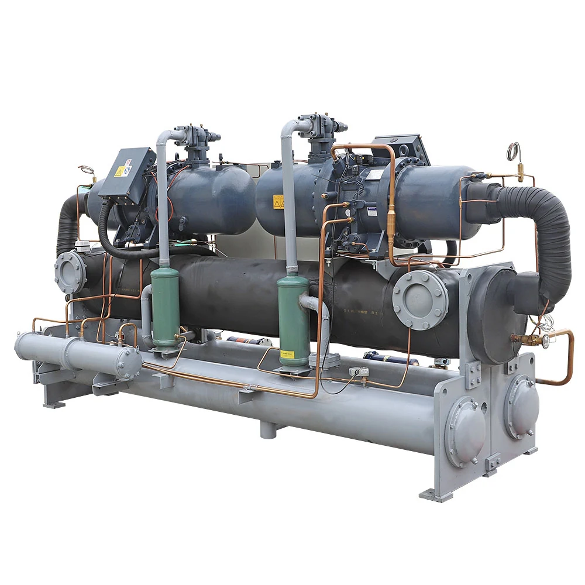
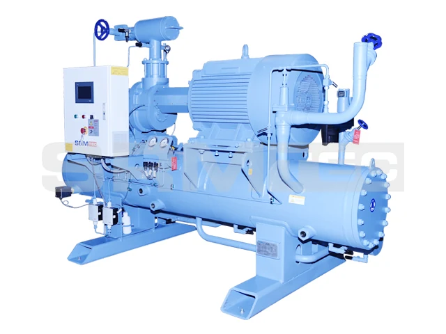
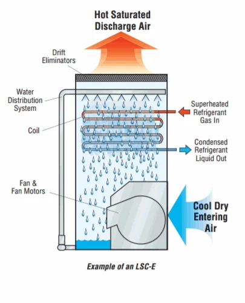
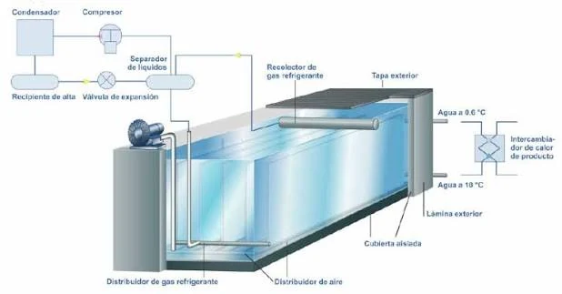

Proyecto de Operaciones Unitarias · Sesión 19
Refrigeración
El ciclo de compresión de vapor que enfría el aceite de la winterización: sus cuatro equipos, su potencia y su COP, el refrigerante que puede ir junto al tanque, el condensador en Bogotá y los refrigerantes secundarios.
El enfriador de la winterización
El aceite que sale del florentino se enfría por lotes en TK-201, un tanque agitado de AISI 316 de 0,63 m de diámetro, antes de pasar por el filtro de profundidad.
- Cada 8 h junta 166 kg de aceite a 20 °C y lo lleva a 5 °C en una hora.
- La camisa recibe propilenglicol a 0 °C y no puede estar más fría: el agua libre del aceite se congelaría en la pared.
- El frío lo da un enfriador empacado de propano, con el compresor, el condensador de aire y el evaporador de placas en un mismo bastidor.
Es la refrigeración de la Bitácora 3: la carga del lote, el ciclo, el refrigerante y el COP.
El frío en una planta de alimentos
Qué le hace el frío a un alimento, para qué más se enfría y adónde llega el frío en una planta.
El frío en los alimentos
La refrigeración
El frío hace más lentas las reacciones, como el pardeamiento y la oxidación de las grasas y de las vitaminas, las enzimas del alimento y el crecimiento de los microorganismos. No los mata: vuelven a crecer cuando el alimento se calienta, y por eso la cadena de frío no se puede romper.
La congelación
El agua que pasa a hielo deja de estar disponible para las reacciones y los microorganismos, y lo que queda líquido se concentra en sales y azúcares. Un congelado dura meses, y un refrigerado, días o semanas. Una congelación lenta forma cristales grandes que rompen las células.
El frío en el proceso
El concentrado de jugo se guarda frío para frenar el pardeamiento y la enzima que lo gelifica. El aceite esencial se enfría para que el agua disuelta salga de solución antes del filtro: es la winterización. El vapor de un evaporador al vacío se condensa a pocos grados.
Los equipos del frío se diseñan con lo que dieron otros capítulos: los intercambiadores del 22, la condensación y la ebullición del 23 y los compresores del 12.
La planta de frío de la juguera
En la juguera de los capítulos 22 a 25, el frío lo da una central de amoníaco en una sala de máquinas, con dos niveles:
- El nivel alto: un banco de hielo que evapora a −8 °C y entrega agua helada a 1 °C a E-201, E-313 y E-312, 168,5 kW.
- El nivel bajo: un enfriador de glicol que evapora a −20 °C para el concentrado y el cuarto del jugo, y amoníaco directo en el edificio del concentrado, 79,4 kW.
- Dos tornillos, C-401 y C-402, y un condensador evaporativo, E-401, que condensa a 30 °C.
El enfriador de la winterización no se conecta a esa central: es un equipo pequeño junto al tanque, en la planta de aceite esencial que recibe la cáscara de la juguera.
El ciclo de compresión de vapor
Los cuatro equipos, lo que se calcula con las entalpías del refrigerante y el enfriador de la winterización de principio a fin.
Los cuatro equipos
Un líquido que hierve a baja presión toma de lo que lo rodea el calor que necesita para evaporarse, y lo enfría. El ciclo lo hace sin parar:
- 1El evaporadorrecibe la mezcla de líquido y vapor a baja presión y la deja salir como vapor, el estado 1, con el calor de lo que enfría.
- 2El compresorsube el vapor a la presión en que puede condensar con el aire o el agua del lugar, el estado 2.
- 3El condensadorle quita el calor hasta dejarlo líquido, el estado 3.
- 4La válvula de expansiónlo devuelve a la presión del evaporador, el estado 4, con una parte ya evaporada.
Un enfriador empacado

- Los cuatro equipos del ciclo van en un solo bastidor: arriba, los dos compresores de tornillo; en el medio, el evaporador de coraza y tubos, forrado en aislamiento porque trabaja frío; abajo, el condensador, que se enfría con agua de torre.
- Las válvulas de expansión y la tubería del refrigerante van por fuera, entre los recipientes.
- La tubería es de cobre, así que no es un enfriador de amoníaco, que ataca el cobre (sección 26.4).
- El de la winterización es mucho más pequeño, de propano y con condensador de aire, pero lleva los mismos cuatro equipos y también se compra armado.
El efecto refrigerante, la potencia y el COP
Cada kilogramo que pasa por el evaporador se lleva el efecto refrigerante. La válvula no hace trabajo ni intercambia calor: la expansión es isentálpica.
sale a la presión de condensación con la entropía de 1, y es la eficiencia adiabática del compresor.
El condensador rechaza el frío más el trabajo. El de Carnot, con las temperaturas en kelvin, es el techo.
Un refrigerante cerca de su saturación no es un gas ideal: la compresión se calcula con sus entalpías reales, de una ecuación de estado (el libro usa CoolProp), y las entalpías de dos fuentes solo se restan si tienen la misma referencia.
El ciclo en el diagrama presión-entalpía
En el diagrama presión-entalpía cada equipo es una línea: el evaporador y el condensador, horizontales a su presión; la válvula, una vertical; el compresor, la curva que sube de 1 a 2.
- Con la presión en escala logarítmica, la campana separa el líquido, la mezcla y el vapor.
- El largo de la línea del evaporador es el efecto refrigerante, y el de la compresión, el trabajo por kilogramo.
- El ciclo estándar sube por la isentrópica; el real termina más a la derecha y más caliente.
El recuadro «Pruebe» de la sección 26.3 deja cambiar el refrigerante, las dos temperaturas y la eficiencia, y ver qué le pasa al ciclo.
La carga del lote
- Mientras se enfría, el lote no recibe ni entrega materia: el calor que se le quita es su calor sensible, con el balance de un lote del capítulo 3.
- El limoneno, a la temperatura media de 12,5 °C, tiene 1,745 kJ/(kg·K), extrapolado en línea recta de 1,779 a 20 °C y 1,833 a 32 °C.
- El tanque también se enfría: contado como un cilindro de fondos planos, tiene 2,21 m² de lámina de 3 mm, 55 kg de AISI 316 con 0,468 kJ/(kg·K).
- Todo eso sale en la hora del lote, una vez cada 8 h. Es poco frío: el enfriador se escoge por la camisa y por la seguridad del refrigerante.
El ciclo del enfriador
| El propano en el enfriador | Valor |
|---|---|
| Evaporación: el glicol sale a 0 °C, 5 K más caliente | −5 °C, 406,0 kPa |
| Condensación: el aire de Bogotá a 25 °C, más 8 K | 33 °C, 1160,8 kPa |
| Relación de presiones | 2,86 |
| : vapor sobrecalentado 6 K | 579,5 kJ/kg |
| : a 1160,8 kPa con la entropía de 1 | 630,3 kJ/kg |
| : líquido saturado | 287,2 kJ/kg |
| Eficiencia del compresor | 0,75 |
Propiedades de CoolProp 8.0.0, con la ecuación de Lemmon para el propano y la referencia del IIR.
El COP y las dos temperaturas
El COP baja cuando crece la diferencia entre la condensación y la evaporación. Con la ecuación de Carnot:
- Un kelvin ganado en el evaporador vale más que uno ganado en el condensador, porque es mayor que .
- La potencia por kilovatio de frío, , crece cada vez más rápido a medida que la evaporación se enfría.
- Con los catálogos de compresores, cada kelvin que baja la condensación ahorra unos 3 % de potencia.
Por eso se evapora tan caliente como lo deja el usuario y se condensa tan frío como lo deja el aire o el agua. En el enfriador, la camisa a 0 °C y el aire a 25 °C fijan las dos.
El ciclo real
- 1El sobrecalentamientoUn evaporador inundado entrega vapor saturado; uno con válvula termostática lo sobrecalienta unos kelvin para que no llegue líquido al compresor, 6 K en el enfriador. Cuenta como efecto refrigerante.
- 2El subenfriamientoEl condensador de una planta industrial entrega líquido casi saturado, y se toma sin subenfriamiento.
- 3La caída de la succiónLa línea al compresor se diseña para perder el equivalente a 1 K de saturación, y el compresor se escoge a esa temperatura.
- 4La eficiencia del compresorUn tornillo de amoníaco va de 62 a 80 % según su relación de presiones; una máquina pequeña de desplazamiento positivo, de 75 a 82 %. El motor se escoge para la potencia más 10 %.
Un compresor de tornillo

- El compresor va abierto, movido por un motor eléctrico aparte, el grande de arriba.
- El recipiente horizontal de abajo es el separador de aceite: el tornillo trabaja con aceite entre sus rotores, que sale con el gas y hay que devolverle.
- Su eficiencia depende de la relación de presiones y de la razón de volumen con que se escoge: de 62 a 80 % en un tornillo de amoníaco, y el motor se escoge con 10 % más que la potencia.
- Así serían C-401 y C-402 de la juguera, uno por nivel de temperatura, en la sala de máquinas.
Tres refrigerantes en el mismo enfriador
El mismo lote, con −5 y 33 °C, 6 K de sobrecalentamiento y una eficiencia de 0,75, con tres refrigerantes que sirven para un equipo pequeño:
| Refrigerante | Clase | PCG | Evapora a −5 °C (kPa) | Condensa a 33 °C (kPa) | Caudal (kg/h) | Potencia (kW) | COP | Descarga (°C) |
|---|---|---|---|---|---|---|---|---|
| R-290, propano | A3 | 0,02 | 406,0 | 1160,8 | 16,2 | 0,304 | 4,32 | 52 |
| R-1234ze(E) | A2L | 1,4 | 179,4 | 630,6 | 33,5 | 0,301 | 4,37 | 45 |
| R-134a | A1 | 1430 | 243,3 | 838,8 | 30,5 | 0,300 | 4,38 | 52 |
Cuentas del modelo del capítulo 26 con CoolProp 8.0.0; la clase, de la ASHRAE 34-2024, y el PCG, del Reglamento (UE) 2024/573 (sección 26.4).
El COP sale casi igual con los tres, y la potencia cambia en milésimas de kilovatio. En un equipo así, el refrigerante se escoge por su seguridad y por su efecto en el ambiente, con los criterios de la sección 26.4.
Los refrigerantes
La clase de seguridad, el límite de concentración en un cuarto, el calentamiento global y las reglas de cada país.
La clase de seguridad
La norma ASHRAE 34 le da a cada refrigerante una clase de dos caracteres:
- La letra dice la toxicidad: A, con un límite de exposición ocupacional de 400 ppm o más; B, con uno menor.
- El número dice la inflamabilidad: 1 no propaga la llama; 2L es poco inflamable, con una velocidad de llama baja; 2 es inflamable, y 3, muy inflamable.
- El límite de concentración (RCL) es la concentración en el aire de un cuarto a la que una fuga todavía deja salir a la gente sin daño.
- El potencial de calentamiento global (PCG) dice cuántas veces calienta un kilogramo del gas lo que calienta uno de CO₂ en cien años.
Los candidatos de una planta de alimentos
| Refrigerante | Clase | RCL (ppm) | RCL (g/m³) | PCG | Ebullición normal (°C) | Presión a 30 °C (kPa) |
|---|---|---|---|---|---|---|
| R-717, amoníaco | B2L | 320 | 0,22 | 0 | −33,3 | 1167 |
| R-744, dióxido de carbono | A1 | 30 000 | 54 | 1 | sublima a −78,5 | 7214 |
| R-134a | A1 | 50 000 | 210 | 1430 | −26,1 | 770 |
| R-404A | A1 | 130 000 | 500 | 3922 | −45,5 | 1414 |
| R-507A | A1 | 130 000 | 510 | 3985 | −46,7 | 1459 |
| R-448A | A1 | 110 000 | 390 | 1386 | ||
| R-513A | A1 | 72 000 | 320 | 630 | ||
| R-1234ze(E) | A2L | 16 000 | 76 | 1,4 | −19,0 | 578 |
| R-290, propano | A3 | 5300 | 9,5 | 0,02 | −42,1 | 1079 |
La clase y el RCL, de la ASHRAE 34-2024; el PCG, del Reglamento (UE) 2024/573; la ebullición y las presiones, de CoolProp 8.0.0, que no trae las ecuaciones del R-448A ni del R-513A. Tabla de la sección 26.4 del libro, sin las presiones a −20 °C.
El amoníaco, los fluorados y los naturales
El amoníaco
El mayor calor latente de los comunes, buen COP, presiones moderadas y PCG de cero, y su olor delata una fuga muy por debajo de la concentración peligrosa. Es tóxico, arde entre 16 y 25 % en el aire y ataca el cobre: va en tubería de acero, y en las plantas nuevas se queda en la sala de máquinas.
Los fluorados
Los A1, como el R-404A y el R-507A, se usaron en plantas medianas donde el amoníaco no convenía cerca de la gente. Los reemplazan mezclas de PCG menor, como el R-513A, y las hidrofluoroolefinas, como el R-1234ze(E), que son poco inflamables.
El dióxido de carbono y el propano
El dióxido de carbono sirve bajo −40 °C, en cascada con amoníaco: a temperatura ambiente su presión es muy alta y queda cerca de su punto crítico, 31 °C, o por encima de él. El propano es un buen refrigerante con PCG casi nulo, y su inflamabilidad lo limita a equipos con poca carga.
El capítulo se queda con una central de amoníaco en una sala de máquinas, con agua helada y glicol hacia los usuarios, y deja los fluorados de PCG bajo y el propano para los equipos pequeños, como el enfriador de la winterización.
Las reglas de cada jurisdicción
Reglamento 2024/573
Desde 2030, ningún gas fluorado de PCG de 150 o más en los aparatos de refrigeración nuevos que no son enfriadores; desde 2027, ninguno de 750 o más en los enfriadores de más de 12 kW, y desde 2032, ningún gas fluorado en los de hasta 12 kW, como el de la winterización.
La regla de la EPA de 2026
En los enfriadores de proceso que entregan su fluido sobre −30 °C, nada de HFC con PCG de 700 o más desde 2026. En las bodegas frigoríficas nuevas, el límite es 700 desde el 27 de julio de 2026, y baja a 150 o 300 en 2032.
Cupos y prohibiciones
No se fabrican ni se importan equipos con las sustancias del Protocolo de Montreal, como el R-22. Los HFC tienen cupos de importación en toneladas de CO₂ equivalente, que bajan a 90 % de la línea base en 2029 y a 20 % en 2045; con HFC, solo los refrigeradores domésticos están prohibidos.
Ninguna de las tres toca el amoníaco ni el dióxido de carbono, que no son gases fluorados.
El límite de concentración en Bogotá
Con el RCL en masa en g/m³, la masa molar en g/mol y la altura en metros. Sin el último factor, es la conversión a 25 °C y 101,325 kPa.
- En ppm, el RCL es una fracción en volumen; en gramos por metro cúbico depende de la densidad del aire, y la norma la corrige con la altura.
- Para el amoníaco, = 0,223 g/m³; en Bogotá el factor es 0,794.
- Con la presión del lugar, 73,7 kPa, el factor sería 0,727: la ecuación de la norma deja en un cuarto de Bogotá unos 9 % más de refrigerante de lo que daría el aire.
- Sobre 1500 m la norma también limita por falta de oxígeno, a 69 100 ppm.
Con la misma ecuación sale el RCL del propano del enfriador en Bogotá: es una de las preguntas de participación de la sección 26.4, y dice cuánto propano cabe en el cuarto del tanque.
El condensador en Bogotá
De agua, evaporativo o de aire, la temperatura de condensación de diseño, su control y lo que cambia a 2600 m.
Tres maneras de condensar
Coraza y tubos con agua de torre
El condensado queda unos 5 K sobre el agua que sale, y el agua sube de 7 a 10 K. Son dos diferencias en serie: la de la torre con el aire y la del condensador con el agua.
La torre y el condensador en uno
El refrigerante condensa en un haz de tubos rociado con agua que se evapora en una corriente de aire. El agua que moja los tubos se acerca al bulbo húmedo, y condensa más frío que uno con agua de torre.
Un haz aleteado con ventiladores
No gasta agua, pero el aire de diseño es el bulbo seco y condensa más caliente. Es el de los equipos empacados: el enfriador de la winterización condensa a 25 + 8 = 33 °C.
El condensador rechaza el frío más el trabajo del compresor. La razón entre los dos es de 1,25 en la juguera, 310,3 kW para 247,9, y de 1,23 en el enfriador, 1,62 kW para 1,314.
Los tres flujos de un condensador evaporativo

El refrigerante condensa dentro del serpentín y le pasa su calor al agua que lo moja. El agua se evapora en la corriente de aire, cae a la bandeja y una bomba la vuelve a subir al distribuidor; la reposición devuelve lo que se evaporó y lo que sale por la purga.
El aire sale saturado, y lo que se lleva es sobre todo el calor latente del agua evaporada: por eso el agua que moja los tubos se acerca al bulbo húmedo, y el condensador condensa más frío que uno con agua de torre.
Este es de tiro forzado, con el ventilador abajo. E-401, la figura del libro de la diapositiva siguiente, es de tiro inducido, con el ventilador arriba, en la chimenea.
![El condensador evaporativo E-401 de la planta de frío en isométrico, de tiro inducido a contracorriente, sin el panel del costado largo que mira al lector: la bandeja con el agua, la válvula de flotador y el rebose abajo; las persianas de la entrada del aire; el haz de serpentines en zigzag entre el cabezal de entrada, arriba, y el de salida, abajo; el distribuidor de agua con sus boquillas; los eliminadores de gotas; la chimenea con el ventilador axial y su motor por fuera, con la correa en su guarda; la bomba de recirculación con la tubería al distribuidor, la purga y el agua de reposición, y las líneas del vapor de amoníaco que llega del compresor y del líquido que va al recibidor, con sus válvulas de corte. Una persona de 1,75 m junto a la caja da la escala.](assets/img/condensador-evaporativo.webp)
El condensador evaporativo E-401
- Las plantas de alimentos con amoníaco condensan de 29 a 35 °C, y cerca de 30 °C donde el bulbo húmedo es bajo, como los 15,6 °C de Bogotá.
- Con agua de torre que llega a 22 °C y vuelve a 32 °C, la planta condensaría a unos 37 °C, y sus compresores tomarían 75,98 kW en lugar de 62,66: 21 % más, unos 2,8 % por kelvin.
- Por cada kilovatio rechazado lleva unos 0,25 m² de tubo, 0,018 L/s de agua sobre los tubos y 0,03 m³/s de aire, y evapora 1,5 L/h de agua.
- Para los 310 kW de E-401: unos 78 m² de tubo, 5,6 L/s de agua, 9,3 m³/s de aire y 465 L/h evaporados.
La condensación mínima y la altura
Los manómetros miden contra la atmósfera del lugar. El condensador a 30 °C, 1166,5 kPa absolutos, marca 10,93 barg en Bogotá y 10,65 al nivel del mar: un umbral que una fuente da en presión manométrica se pasa primero a absoluta.
Los evaporadores y los refrigerantes secundarios
Expansión directa o con un secundario, el agua cerca de 0 °C, el propilenglicol y la diferencia de temperatura de cada equipo.
Expansión directa o con un secundario
En la expansión directa el refrigerante hierve en el intercambiador del usuario. En la indirecta se queda en la sala de máquinas y enfría un refrigerante secundario, agua helada, glicol o una salmuera, que lleva el frío.
- Cuesta un intercambio más: el refrigerante evapora de 5 a 10 K más frío para el mismo usuario, y el secundario pide bombas y red.
- A cambio, el amoníaco no sale de la sala de máquinas, la carga de refrigerante baja mucho y una fuga en un usuario es de agua o de glicol.
- La juguera usa dos: agua helada a 1 °C (CHW) para lo que se enfría hasta unos grados sobre 0 °C, y propilenglicol (GLY) para lo que baja de 0 °C.
El enfriador de la winterización también es indirecto: el propano no sale del bastidor, y a la camisa llega glicol.
El agua cerca de 0 °C
Con los 5 K que se aceptan con un refrigerante, un evaporador de coraza y tubos que entregue agua a 1 °C evaporaría a −4 °C, y el agua se congelaría en los tubos con cualquier baja de carga. Se hace de otras tres maneras:
El banco de hielo
Un tanque de agua con serpentines sumergidos sobre los que crece hielo. El agua sale de 1 a 3 °C según la carga, con la evaporación entre −10 y −3 °C, y el hielo guarda frío para las horas de más carga.
La película descendente
El agua cae en película sobre placas con el refrigerante hirviendo adentro. Como la película no se represa, puede salir a 0,5 o 1 °C sin congelarse.
Las placas soldadas
Lleva poco refrigerante, con coeficientes globales de 2500 a 4500 W/(m²·K) entre el agua y el amoníaco.
La juguera escoge un banco que funde el hielo por fuera, E-402, que evapora a −8 °C. Si el agua saliera a 2 °C, E-201 dejaría el jugo a 3,44 °C y el cuarto lo recibiría a 6,74 °C, sobre los 6 °C de la Resolución 2674: por eso la planta cuida el hielo del banco.
El banco de hielo

- El refrigerante llega del recipiente de alta por la válvula de expansión y el separador de líquidos, hierve dentro de los evaporadores sumergidos y forma hielo sobre ellos; el vapor vuelve al compresor por el recolector.
- El aire que sale del distribuidor, en el fondo, agita el agua para que pase pareja por el hielo.
- El agua que vuelve del intercambiador de producto a 10 °C funde el hielo por fuera y sale a 0,6 °C; mientras haya hielo, sale casi a la misma temperatura.
- E-402 de la juguera es así: le entrega el agua a 1 °C a E-201, E-313 y E-312, y la recibe de vuelta a 7,3 °C.
El propilenglicol
- Bajo 0 °C, en una planta de alimentos el secundario es propilenglicol de grado alimentario, nunca etilenglicol, que es tóxico y llegaría al producto con una fuga. Las salmueras corroen el acero.
- La concentración se escoge para que no se congele en la pared fría del evaporador. El capítulo pone su punto de congelación 8 K bajo la evaporación; la ASHRAE pide al menos 3 K y mejor 8, y la ISO 5149, más de 3 K.
- En la juguera, que evapora a −20 °C, el glicol debe congelar a −28 °C o más abajo, y eso pide 47 %.
- Se paga en el bombeo: al 47 % y a −15 °C tiene 47,6 mPa·s, casi treinta veces la viscosidad del agua a 1 °C. Por eso se diseña para calentarse unos 5 K en el usuario.
| Propilenglicol, % en masa | Punto de congelación (°C) |
|---|---|
| 25 | −9,8 |
| 30 | −12,8 |
| 35 | −16,3 |
| 40 | −20,6 |
| 45 | −25,8 |
| 50 | −32,2 |
CoolProp 8.0.0 con las tablas de Melinder; la fracción siempre se dice si es en masa o en volumen.
¿Qué concentración pide el glicol del enfriador de la winterización, que evapora a −5 °C, con la regla de los 8 K?
La diferencia de temperatura de cada equipo
Las reglas de diseño dan una sola cifra, 5 K con un refrigerante. El capítulo la toma por equipo, y los 5 K valen para un evaporador de coraza y tubos lejos del punto de congelación del secundario.
| Equipo | Diferencia de temperatura |
|---|---|
| Serpentín de aire bajo 0 °C, de expansión directa | 5,5 a 6,5 K entre el aire que entra y el refrigerante |
| Serpentín de aire sobre 0 °C | 2,2 a 4,4 K con humedad alta y 11 a 17 K con humedad baja; 4 a 5 K para unos 90 % y 14 a 16 K con producto empacado |
| Serpentín de aire con glicol | el glicol, unos 5 K más frío que el refrigerante de un serpentín de expansión directa equivalente |
| Enfriador de glicol | 5 K entre el glicol que sale y el refrigerante: el del enfriador de la winterización |
| Intercambiador de cascada | 5 K entre el refrigerante que condensa y el que evapora |
| Condensador de agua | unos 5 K sobre el agua que sale |
| Agua helada a 1 o 3 °C | banco de hielo o película descendente, no coraza y tubos |
De Stoecker, la ASHRAE y Singh, Heldman y Erdogdu, en la tabla de las aproximaciones de la sección 26.7 del libro.
Lo que pide su planta
El capítulo 26 en el libro
Lo que entra en el Quiz 8
- 26.1El frío en una planta de alimentosPara qué se enfría y dónde va el frío.
- 26.3El ciclo de compresión de vaporCon el ejemplo 26.2, el enfriador de la winterización, sus dos animaciones y el recuadro «Pruebe».
- 26.4Los refrigerantes, su seguridad y el ambienteLa clase, el RCL, el PCG y las reglas.
- 26.6El condensador en BogotáDe agua, evaporativo o de aire, y su control.
- 26.7Los evaporadores y los secundariosTodo menos el ejemplo 26.5.
Para ampliar
- 26.3El ciclo del nivel altoEl ejemplo 26.3, con un tornillo de amoníaco.
- 26.5Las etapas de compresiónCuándo conviene la segunda etapa, con el ejemplo 26.4.
- 26.8La carga de un cuarto fríoLas cinco partes de la carga, con su margen.
- 26.12La planta de frío en operaciónLas normas de una planta de amoníaco y lo que falla en ella.
Lo que sigue
Filtración y winterización
El aceite frío pasa por el filtro de profundidad, con el Quiz 9.
Taller 4
El filtro de la winterización y el florentino, con datos por pareja.
Servicios de planta
El vapor, el agua de enfriamiento y la recuperación de calor, con el Quiz 10.
Bitácora 3
El arrastre, el condensador, el florentino, la winterización y los servicios.
El Examen 2, el martes 20 de abril, evalúa la condensación, la refrigeración, las separaciones mecánicas y los servicios.
IQYA-2031 · Sesión 19
Próxima sesión
Nos vemos el jueves 8 de abril en la clase de filtración y winterización, con el Quiz 9 al empezar.
Figuras: capítulo 26 del libro de operaciones unitarias del curso. Grabados, vía Wikimedia Commons: «Citrus, Citronier» y «Citrus aurantium», New York Public Library, dominio público; «Un boticario y un alambique primitivo» y «Rama de cítrico con dos frutos», Wellcome Collection, CC BY 4.0; «Citrus madurensis», Francisco Manuel Blanco, dominio público.